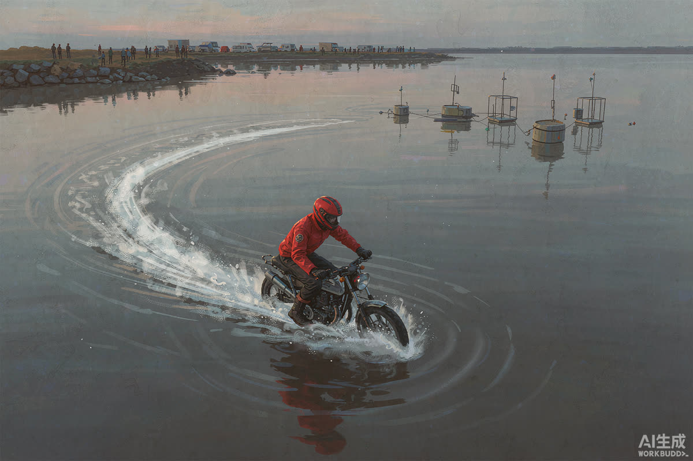

摩托车水上漂 40 公里：这一漂，漂出的是工程学的浪漫
机车博主张雪成功挑战摩托车水上漂 40 公里，刷新吉尼斯世界纪录。热闹看完，真正值得聊的是：把一辆摩托车按在水面上跑 40 公里，到底难在哪。
挑战的核心命题很朴素：让摩托车在水面上持续行驶 40 公里。这不是一次"胆大的瞬间"，而是一段持续输出的工程验证——水面上任何一次失速、一次进水，都是终点。
从公开信息看，这类挑战的成败系于三件事：足够快的速度维持水动升力、关键部件的防水密封、以及骑手对油门与姿态的毫米级控制。40 公里的意义在于：它把"能不能漂"变成了"能漂多久"。

▲ 图注：水面上的白色航迹，就是全部答案（号外风 · 示意）
敬意派 ▸ 吉尼斯纪录的价值就在把"不可能"变成"已验证"；背后的改装、测试、试错是实打实的工程投入，值得尊重。
审慎派 ▸ 水面高速行驶的风险边界极窄，示范效应之下，模仿者的安全谁来兜底？纪录的光环不该掩盖风险成本。
编辑部倾向于这样看：挑战本身无可指摘，但传播时的风险提示与专业门槛说明，理应和精彩画面一起呈现。极限的敬畏感，是这类内容最该传递的东西。
这一漂真正的遗产不是证书，是被验证的方法论：升力、密封、控制——每个环节的数据都会沉淀下来。下一个人破纪录时，站在这 40 公里的肩膀上。
后续盯什么 WATCHLIST
01 · 吉尼斯官方对挑战条件与计时口径的确认细节
02 · 车辆改装方案的公开程度：保密还是开源，决定这项纪录的行业价值
03 · 后续是否出现模仿挑战，以及平台对这类内容的安全审核姿态
你愿意把这类挑战称为极限运动，还是流量杂技？评论区亮观点。
口径说明：挑战信息以当事人及吉尼斯官方发布为准；观点仅代表编辑部；本栏目不站队、只拆事。